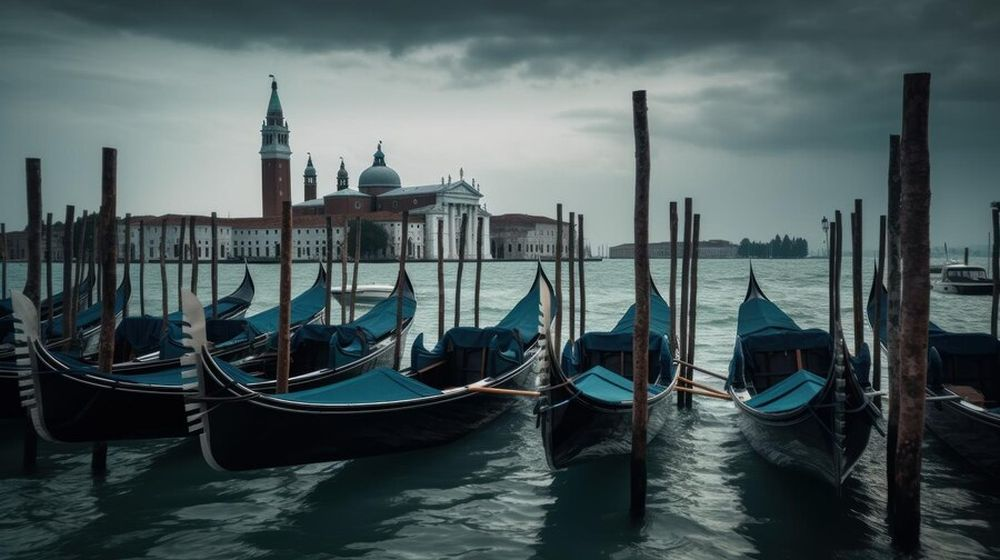

Descoperă Veneția - O bijuterie plutitoare în Italia
Veneția este un oraș plin de farmec și istorie, cunoscut pentru canalele sale unice și arhitectura splendidă:
-

Piața San Marco - Inimă istorică
O piață centrală impresionantă, înconjurată de catedrala San Marco și palate istorice.
-

Canalul Mare - Drumul principal
O arteră acvatică celebră, străbătută de gondole și vaporetto-uri, oferind priveliști spectaculoase.
-

Podul Rialto - Iconic și istoric
O construcție emblematică, care oferă perspective minunate asupra Canalului Mare.
-

Gondolele - O călătorie romantică
O experiență unică de a naviga pe canalele venețiene într-o gondolă tradițională.
-

Insula Murano - Artă în sticlă
O insulă cunoscută pentru producția de sticlă suflată, cu ateliere și expoziții impresionante.
Concluzii
Veneția oferă o experiență unică și fascinantă, cu atmosfera sa plutitoare și atracțiile sale istorice.